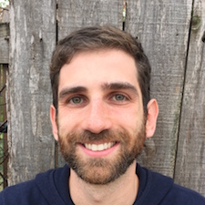

| I am currently a Moore/Sloan Data Science and WRF Innovation in Data Science Postdoctoral Fellow at the eScience Institute at the University of Washington. I am working with Peter Hoff on methods for data fusion and tensor covariance estimation. I am also developing methodology for analyzing large and heterogeneous metabolomic data with Daniel Promislow. I recently received my PhD in the Department of Statistics at Harvard University. There I was a member of Edoardo Airoldi's lab, where I developed models for high-throughput biological data, missing data methodology, and statistics in networks. |
 |